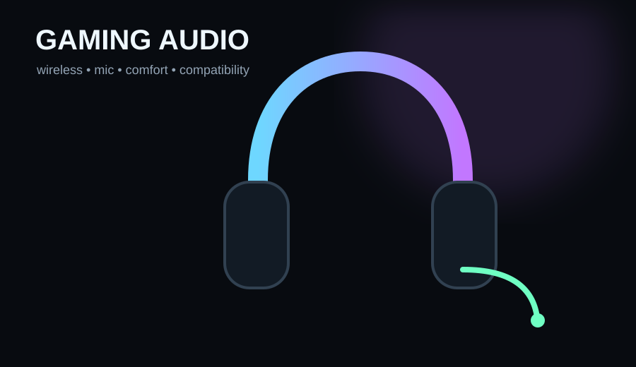

Pick the Razer BlackShark V3 for competitive low-latency PC gaming, HyperX Cloud III S Wireless for huge battery life and broad compatibility, or SteelSeries Arctis Nova 3 Wireless for a lighter mid-range feature set with app presets and quick-switch wireless.
- You want 2.4GHz gaming wireless rather than Bluetooth-only latency
- You have checked the exact PC/PlayStation/Xbox version you need
- Comfort, mic and controls matter as much as driver size
- You mostly play at a desk and would prefer better wired headphones
- You assume virtual surround automatically improves positional audio
- You have not checked whether the USB dongle works on your platform
Key specs & facts
| Razer BlackShark V3 | 10ms-class 2.4GHz; Bluetooth; USB |
|---|---|
| HyperX Cloud III S Wireless | Up to 120h 2.4GHz / up to 200h Bluetooth |
| SteelSeries Arctis Nova 3 Wireless | 40h battery; quick-switch Bluetooth + 2.4GHz |
| Main buying check | Exact platform version / dongle compatibility |
Wireless gaming headsets are good enough now
Modern 2.4GHz gaming links can deliver low latency and stable audio without the obvious lag that made old Bluetooth-only headsets unsuitable for competitive play. The trade-offs have moved to comfort, microphone quality, battery life, platform support and software.
Best overall for competitive PC gaming: Razer BlackShark V3
Razer lists latency as low as 10ms on its HyperSpeed Wireless Gen-2 connection, plus Bluetooth and USB wired audio. PC Gamer currently ranks it as its best overall gaming headset, with the upgraded 50mm drivers and detachable wideband microphone central to the recommendation.
Best battery-focused all-rounder: HyperX Cloud III S Wireless
HyperX lists up to 120 hours over 2.4GHz and up to 200 hours in Bluetooth mode, with 53mm drivers and compatibility spanning PC, Mac, PS5, mobile and Switch. That makes it a strong choice for people who hate charging and switch between devices.
Best mid-range feature balance: SteelSeries Arctis Nova 3 Wireless
SteelSeries lists a 40-hour battery, quick-switch Bluetooth plus 2.4GHz and mobile-app access to more than 200 game audio presets. It is less of a battery monster than HyperX but can be an attractive middle ground for players who like per-game tuning.
Xbox warning
Wireless headset compatibility can be version-specific. SteelSeries, for example, sells 3X versions for Xbox and separate 3P/PC variants. Razer and HyperX lines also vary by model. Buy the exact platform version, not just the product-family name.
Microphone versus standalone mic
An integrated boom mic wins on convenience and consistent mouth position. A separate USB or XLR mic can sound better, but it adds desk space and complexity. For most gaming and Discord use, a good headset mic is the sensible compromise.
How we would buy
Start with platform support and comfort, then decide whether latency, battery or software matters most. Do not pay extra for virtual surround labels before checking whether you prefer the headset's normal stereo presentation in the games you actually play.
Check the wireless mode on your platform
“Wireless” can mean 2.4GHz dongle, Bluetooth or both, and console USB support varies. Competitive gaming should normally use the low-latency 2.4GHz route when supported; Bluetooth is more useful for phones, calls and secondary-device convenience. Check the exact platform list before assuming a PC headset works identically on PlayStation, Xbox and Switch.

Razer BlackShark V3
Strong low-latency wireless and an excellent gaming-first feature set.

HyperX Cloud III S Wireless
Very long battery life plus 2.4GHz, Bluetooth and broad device support.
SteelSeries Arctis Nova 3 Wireless
Quick-switch wireless and useful app presets in a flexible mainstream package.
Amazon prices and availability change frequently, so we show a current Amazon UK link rather than copying a price that may be stale.
Razer BlackShark V3 Researched Review: One of 2026’s Strongest Wireless Gaming Headsets
Read next →ASUS VY279HGR Review: A Cheap 27-inch Gaming Monitor That Makes Sense at the Right Price
Read next →
MOZA R5 vs Fanatec CSL DD 5 Nm: Which Beginner Direct-Drive Bundle Is Better?
Read next →Sources
Key specifications and factual claims are checked against manufacturer or primary-source material where available.
About this article
This page is a researched guide or comparison, not a claim of hands-on testing unless we explicitly say otherwise. Product specifications and availability can change, so important buying details are checked against current source material when the article is updated. Affiliate availability does not determine the underlying recommendation.